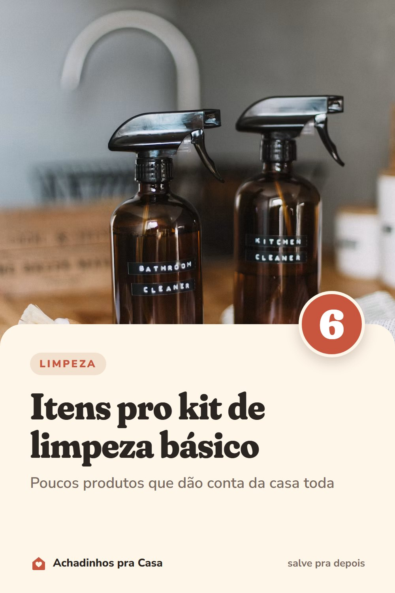

Limpeza
Kit de limpeza básico: 6 itens que limpam a casa toda
Poucos produtos que dão conta da casa toda.
- Detergente neutroServe para louça, bancada, piso e quase tudo que não precisa de desinfecção.
- MultiusoPara a gordura do dia a dia no fogão, na coifa e nos azulejos.
- Água sanitáriaPara banheiro, ralos e panos, sempre diluída como manda o rótulo. Nunca misture com vinagre, amoníaco ou outro produto: a mistura solta gases tóxicos.
- Vinagre de álcoolCom água, deixa vidros e box sem marcas.
- BicarbonatoTira cheiro da geladeira e ajuda com a sujeira grudada na pia e no fogão.
- Panos de cores diferentesUma cor para a cozinha e outra para o banheiro: o pano do vaso nunca chega à bancada.